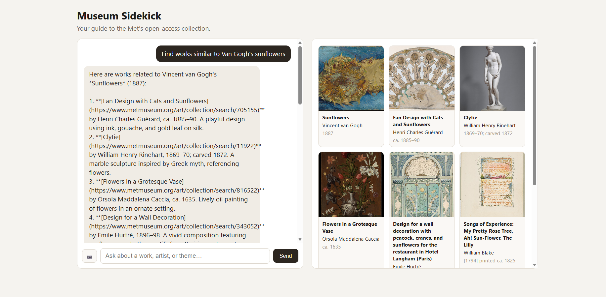
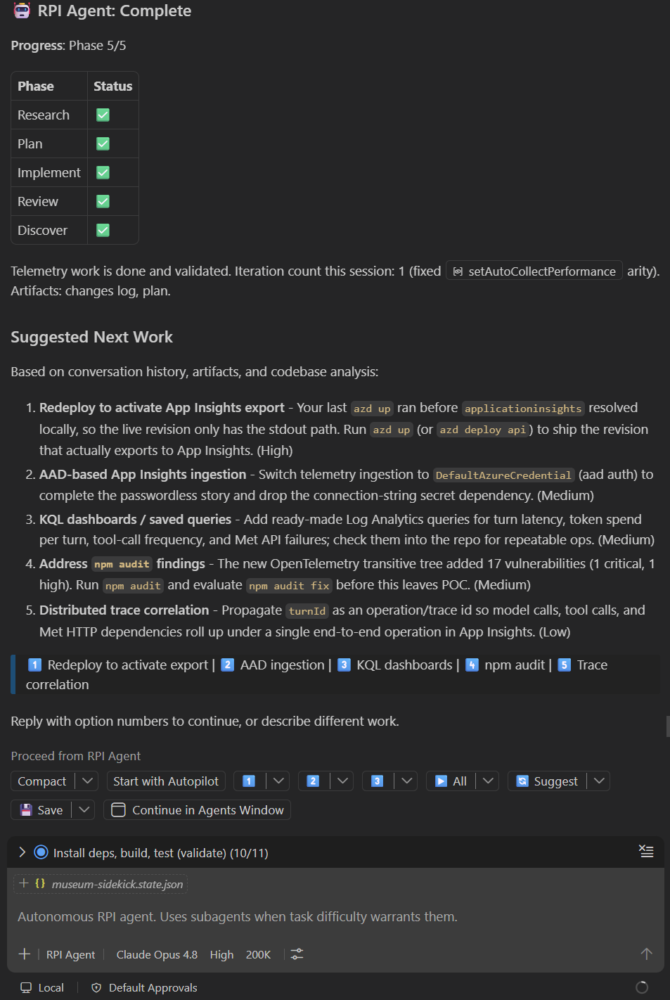

Scaffold the project
Goal: turn a one-paragraph spec into a working project skeleton for agentic-sidekick, composed from CAIRA reference components.
Start from a spec, not a blank page
Create a short spec file the agent can anchor to. Save it as SPEC.md in an empty project directory.
# agentic-sidekick
A visitor-facing, multimodal agent that plans themed self-guided museum visits
from the Met's open-access collection. Given a request like "Build me a 6-stop
family tour on animals in art across cultures," it searches the Met API, filters
to public-domain works with images, sequences the stops, writes narration, and
renders a visual gallery.
Stack: TypeScript, Foundry Agent Service (GPT-4o vision), Azure Container Apps,
React frontend. Compose infrastructure and app scaffolding from CAIRA.Research the scaffold
Open Copilot Chat and run the Research phase. Point it at the spec, the installed CAIRA skill, and the Learn MCP.
/rpi-research Scaffold the agentic-sidekick project from SPEC.md. Use the CAIRA
skill to identify which reference components to copy: Foundry IaC, Container Apps
IaC, the TypeScript Foundry Agent Service API, and the React frontend. Use the
Microsoft Learn MCP to confirm the current project layout and dependencies for a
Foundry Agent Service app. Do not write code yet; produce a research document.The Research phase inspects CAIRA, verifies the Foundry Agent Service shape against Microsoft Learn, and writes a research document under .copilot-tracking/. You should see one recommended structure with evidence:
agentic-sidekick/
infra/ # from CAIRA iac/foundry + iac/container-apps
src/
api/ # from CAIRA app/api/typescript/foundry-agent-service
agent/ # agent definition + tools (empty for now)
met/ # Met tool layer (empty for now)
frontend/ # from CAIRA app/frontend/typescript/react
azure.yaml # azd service map
package.jsonBecause the Research phase cites specific CAIRA files and Learn doc pages, you can trust the plan is grounded in real components rather than a plausible guess. This is the core HVE benefit.
Plan and implement
Clear context between phases, then plan and implement.
/clear
/rpi-plan Create the implementation plan to scaffold agentic-sidekick from the
research document. Copy the four CAIRA components into the structure the
research recommends, wire azure.yaml, and leave the agent and Met tool
directories as documented stubs.
/clear
/rpi-implement Execute the scaffold plan.Copilot copies the CAIRA components into place, adjusts names, and writes an azure.yaml that maps two services. Confirm the skeleton builds.
npm install
npm run buildYou now have a project that compiles but does not yet do anything intelligent. That is intentional. The next steps add the agent, then its tools.
Wire Foundry Agent Service
Goal: make the skeleton talk. Add a conversational agent backed by Azure AI Foundry Agent Service with GPT-4o vision, so it can both chat and reason over images.
Research the agent wiring
The Foundry Agent Service SDK evolves, so ground this step in current docs before writing any code.
/rpi-research Wire the agentic-sidekick API to Azure AI Foundry Agent Service.
Use the Microsoft Learn MCP to confirm the current SDK for creating an agent,
starting a thread, sending a message, and running the agent. Confirm how to
attach an image to a message so GPT-4o vision can describe artwork. Base the
implementation on the CAIRA foundry-agent-service reference. Produce a research
document with cited Learn pages.Plan and implement
/clear
/rpi-plan Create the plan to add a chat endpoint and a vision-capable message
path to the agent API, using the researched Foundry Agent Service SDK.
/clear
/rpi-implement Execute the agent-wiring plan.A minimal shape looks like the following. Treat it as an illustration; your generated code follows the exact SDK the Learn MCP confirmed.
// src/api/agent/agent.ts
import { AgentsClient } from "@azure/ai-agents";
import { DefaultAzureCredential } from "@azure/identity";
const client = new AgentsClient(
process.env.FOUNDRY_PROJECT_ENDPOINT!,
new DefaultAzureCredential()
);
export async function createSidekick() {
return client.createAgent(process.env.MODEL_DEPLOYMENT_NAME!, {
name: "museum-sidekick",
instructions:
"You are a friendly museum guide. Plan tours and explain artworks " +
"using only works you retrieved from the Met tool layer. Adapt tone " +
"to the visitor, including children.",
});
}The multimodal path attaches an image URL to the message so GPT-4o vision can describe a work.
// explain an artwork to a 10-year-old
await client.createMessage(threadId, "user", [
{ type: "text", text: "Explain this painting to a 10-year-old." },
{ type: "image_url", imageUrl: { url: object.primaryImage } },
]);Configure and verify
The CAIRA component reads its Foundry settings from the environment. Authentication uses DefaultAzureCredential, so sign in once with the Azure CLI.
export FOUNDRY_PROJECT_ENDPOINT="https://<your-project>.services.ai.azure.com"
export MODEL_DEPLOYMENT_NAME="gpt-4o"
az loginRun the API locally and send a plain chat message.
npm run dev --workspace api
curl -X POST http://localhost:3000/chat \
-H "Content-Type: application/json" \
-d '{"message":"Hi, what can you help me do at the Met?"}'You should get a friendly, general answer. It cannot yet retrieve real artworks; it has no tools. That is the next step, and it is where the demo becomes convincing.
Build the Met tool layer
Goal: give the agent real capabilities. Add tools that call the Met Collection API so the agent retrieves live, grounded artworks instead of inventing them. This is the retrieval layer, implemented as agentic tool-calling.
The tools the agent needs
| Tool | Parameters | Met endpoint |
|---|---|---|
search_collection | q, departmentId, medium, geoLocation, dateBegin, dateEnd, hasImages, isHighlight, isOnView, tags | /search |
get_object | objectID | /objects/{id} |
list_departments | none | /departments |
build_tour / find_related | derived (sequence by tag, culture, period) | derived from the above |
The guardrail: solve the N+1 fan-out live
This is the signature engineering moment. The Met /search endpoint returns only an array of object IDs. To show anything, you must call /objects/{id} for each result. Done naively, a 40-result search fires 40 sequential requests. Have Copilot fix it on stage.
/rpi-research Design the Met tool layer for agentic-sidekick. The /search
endpoint returns only object IDs, so get_object must fan out to /objects/{id}.
Design search_collection to batch and cache those fetches with a bounded
concurrency limit, and to always filter hasImages=true and isPublicDomain=true
so every returned work is safe to display. Use the Microsoft Learn MCP only if
needed for the agent tool-calling registration API. Produce a research document.
/clear
/rpi-plan Plan the Met tool layer: a typed Met client, the four tools, batched
and cached object fetching, and registration of the tools with the Foundry
agent.
/clear
/rpi-implement Execute the Met tool layer plan.What the batched, cached fetch looks like
// src/api/met/client.ts
const BASE = "https://collectionapi.metmuseum.org/public/collection/v1";
const cache = new Map<number, MetObject>();
async function getObject(id: number): Promise<MetObject | null> {
if (cache.has(id)) return cache.get(id)!;
const res = await fetch(`${BASE}/objects/${id}`);
if (!res.ok) return null;
const obj = (await res.json()) as MetObject;
cache.set(id, obj);
return obj;
}
// bounded fan-out: never more than `limit` requests in flight
async function getObjects(ids: number[], limit = 8): Promise<MetObject[]> {
const out: MetObject[] = [];
for (let i = 0; i < ids.length; i += limit) {
const batch = ids.slice(i, i + limit).map(getObject);
out.push(...(await Promise.all(batch)).filter((o): o is MetObject => !!o));
}
return out;
}
export async function searchCollection(params: SearchParams): Promise<MetObject[]> {
const qs = new URLSearchParams({ hasImages: "true", ...toQuery(params) });
const res = await fetch(`${BASE}/search?${qs}`);
const { objectIDs } = (await res.json()) as { objectIDs: number[] | null };
if (!objectIDs) return [];
const objects = await getObjects(objectIDs.slice(0, 40));
// only public-domain works with a usable image
return objects.filter((o) => o.isPublicDomain && o.primaryImage);
}The hasImages=true filter and the isPublicDomain check are what make the demo safe to run live: every rendered work is CC0 and has an image.
Verify grounded retrieval
curl -X POST http://localhost:3000/chat \
-H "Content-Type: application/json" \
-d '{"message":"Find three highlighted paintings of cats and tell me about them."}'The response should reference actual Met object titles and image URLs. That is the moment the agent stops guessing and starts retrieving.
Tests and self-heal
Goal: make the tool layer trustworthy. Add tests that mock the Met API, then use HVE's review loop to have Copilot diagnose and fix any failures it finds.
Research, plan, implement the tests
Mock the fetch calls so tests are deterministic and prove your logic: batching, caching, and the safety filters.
/rpi-research Plan a test suite for the Met tool layer. Mock the Met API so
tests never hit the network. Cover: search_collection returns only public-domain
works with images, get_object caches so a repeated ID is fetched once, and the
fan-out respects the concurrency limit. Produce a research document.
/clear
/rpi-plan Plan the test files and the mock harness from the research.
/clear
/rpi-implement Execute the test plan.A representative test asserts the caching behavior.
// src/api/met/client.test.ts
import { describe, it, expect, vi, beforeEach } from "vitest";
import { searchCollection } from "./client";
beforeEach(() => vi.restoreAllMocks());
it("caches get_object so a repeated ID is fetched once", async () => {
const fetchSpy = vi.spyOn(globalThis, "fetch").mockImplementation((url) => {
if (String(url).includes("/search")) {
return jsonResponse({ objectIDs: [1, 1, 2] });
}
return jsonResponse(publicDomainObject(Number(String(url).split("/").pop())));
});
await searchCollection({ q: "cats" });
// /search once + two unique objects, not three
expect(fetchSpy).toHaveBeenCalledTimes(3);
});Let Copilot self-heal failures
When a test fails, do not fix it by hand first. Feed the failure to the review loop and let the agent diagnose and repair it.
/rpi-review The test suite has failures. Analyze the failing tests and the tool
layer, identify the root cause, and produce a plan to fix it.
/clear
/rpi-implement Apply the fix from the review.The review phase reads the test output as evidence. It is the same research-first discipline applied to debugging, so the agent converges on a real fix rather than thrashing.
Infrastructure and CI/CD
Goal: make the app deployable. Bring in CAIRA's Foundry and Container Apps infrastructure as code, and wire the Azure Developer CLI so the whole system provisions and deploys with one command.
The infrastructure you need
- An Azure AI Foundry account and project with a GPT-4o deployment.
- Two Azure Container Apps: the agent API and the React frontend.
- Least-privilege role assignments so the API can call Foundry without secrets.
CAIRA already provides all of this as Terraform reference architecture. You adapt it rather than authoring it.
Research, plan, implement
/rpi-research Compose the infrastructure for agentic-sidekick from CAIRA. Use
reference-architectures/iac/foundry for the Foundry account, project, and a
GPT-4o deployment, and reference-architectures/iac/container-apps for two
Container Apps (api and frontend). Use the Microsoft Learn MCP to confirm the
current azd azure.yaml schema and how azd maps services to Container Apps.
Produce a research document listing exactly which CAIRA files to copy and which
variables to set.
/clear
/rpi-plan Plan the infrastructure: copy the CAIRA Terraform modules into infra/,
parameterize the Foundry model deployment as gpt-4o, define two Container Apps,
and complete azure.yaml so azd provisions and deploys both services.
/clear
/rpi-implement Execute the infrastructure plan.The azd service map
# azure.yaml
name: agentic-sidekick
metadata:
template: agentic-sidekick@1.0.0
infra:
provider: terraform
services:
api:
project: ./src/api
language: ts
host: containerapp
frontend:
project: ./src/frontend
language: ts
host: containerappThe Foundry model deployment
# infra/foundry/main.tf (excerpt, adapted from CAIRA)
model_deployments = {
gpt-4o = {
model_name = "gpt-4o"
model_version = "2024-11-20"
sku_capacity = 30
}
}Validate before you provision
task bootstrap
task validate
azd provision --previewKeep the GPT-4o capacity modest for a demo and tear the environment down afterward with azd down.
Hand a feature to the Coding Agent
Goal: show delegated development. Assign a self-contained feature to the GitHub Coding Agent, then review the pull request it opens, live, while the room watches.
Choose a well-shaped feature
A new Met tool is ideal: find_related_works, which takes an object and returns thematically connected works using its tags, culture, and period. Steps 3 and 4 established the tool pattern and the test harness, so the agent has clear examples to follow.
Write the issue
### Add a find_related_works tool
Add a new agent tool `find_related_works(objectID)` to the Met tool layer.
Behavior:
- Fetch the source object with the existing get_object.
- Search for works that share its tags, culture, or period.
- Reuse the batched, cached fetch and the public-domain + image filters.
- Return up to 6 related works, excluding the source object.
Acceptance criteria:
- Registered as a Foundry agent tool with a clear schema.
- Unit tests mock the Met API and cover the tag-match and exclusion logic.
- All existing tests still pass.Delegate to the Coding Agent
gh issue create \
--title "Add a find_related_works tool" \
--body-file .github/ISSUE_find_related_works.md \
--assignee "@copilot"The Coding Agent works in the background: it reads the repository, follows the established tool and test patterns, implements the feature, runs the tests, and opens a pull request.
Review the pull request
- Does it reuse the batched, cached fetch rather than adding a second fan-out?
- Does it keep the public-domain and image safety filters?
- Do the new tests actually exercise the tag-match and exclusion logic?
- Are the existing tests still green in CI?
gh pr checkout <number>
npm test
gh pr review <number> --approveIf something is off, leave a review comment and let the Coding Agent revise. The back-and-forth is itself a compelling demo of human-in-the-loop delegation.
Deploy and demo
Goal: ship it and show it. Deploy the whole system to Azure with one command, then run the four signature moments that prove an agent with tools beats autocomplete.
Deploy with one command
azd upazd up provisions the Foundry account, project, and GPT-4o deployment, creates the two Container Apps, builds and pushes both images, and prints the public frontend URL. Open it.
The first azd up provisions Foundry and Container Apps from scratch. Subsequent azd deploy runs, for code-only changes, are much faster.

azd up — the baseline we build on top of.This is the actual app the first deploy produced: a chat panel wired to the agent, and a live gallery pulled straight from the Met. It is rough, it is real, and it is the starting line. Everything on the roadmap below builds on top of exactly this.
Run the four aha moments
Multi-step tour from one sentence
Build me a 6-stop family tour on
animals in art across cultures.The agent searches multiple departments, filters to highlighted public-domain works, sequences the stops, writes kid-friendly narration, and renders a gallery.
Multimodal explanation
Explain this painting to a 10-year-old.GPT-4o vision reads the actual image and explains it in plain, friendly language.
Cross-cultural connections
How did different cultures depict cats?
Show me examples.The agent uses the tag and culture fields to find related works across departments, reasoning about metadata.
The feature you shipped
Find works related to this one.The tool the Coding Agent wrote returns thematically connected pieces, closing the loop from delegated development to live feature.
The enterprise hook
After the consumer demo lands, reframe for partners. The same agent, pointed at a curator's workflow, assembles a themed collection and drafts exhibit labels in minutes. The visitor experience and the productivity tool are the same system.
Clean up
Tear down the environment when you are done to stop billing.
azd down --purge✓ Live today
What the deployed agent does right now
This is not a mockup. Everything below is running in the deployed POC, straight from the codebase. It is the concrete result of the seven steps above.
Grounded chat
A warm museum-guide persona on POST /api/chat, powered by GPT-4o tool calling with a 5-step cost cap. Every answer is grounded in real Met works.
Conversation memory
Prior turns travel with each request, so the agent keeps context across a back-and-forth exchange.
Multimodal vision
Attach an image (upload or URL) and GPT-4o describes what it sees, then searches for related works in the collection.
Four Met tools
search_collection (filter by department, medium, geography, date, highlights, on-view), get_object, list_departments, and find_related — the "more like this" tool the Coding Agent shipped.
Grounding guardrails
Every displayed work is guaranteed public-domain and image-bearing, with soft-fail on bad IDs so one gap never sinks the gallery.
Tuned Met client
Process-local caching, bounded concurrency (8 in flight), and null-cached 404s tame the Met API's N+1 fan-out.
Chat + gallery UI
A React front end with image attach and preview, starter prompts, and a responsive, de-duped gallery of artwork cards linking back to metmuseum.org.
Passwordless on Azure
Managed identity via DefaultAzureCredential in Azure, with an API-key fallback for local dev. No secrets in the app.
One-command deploy
Terraform + azd up ship both Container Apps with scale-to-zero, plus a /health probe and Vitest unit tests on the Met client.
The methodology, applied
Case study: shipping observability with HVE
The baseline above was the floor. The first feature we layered on top was making the agent observable — and we built it the HVE way, on purpose, to showcase the methodology end to end. What follows is not a plan; it is what actually happened. One RPI agent ran the loop, and when an architectural fork appeared, we handed it to a specialist reviewer.
Once every agent turn is logged and measurable, every feature after it can be evaluated instead of guessed at. But the feature itself is only half the point — the other half is demonstrating how HVE drives a real SDLC increment: research before code, a plan you can audit, an implementation that self-heals, and a durable decision record when the architecture forks.
1 · The RPI agent ran the full loop
Rather than hand-instrumenting the API, we gave the work to the
autonomous RPI agent, which drove all five phases of the
HVE loop — Research, Plan, Implement, Review, Discover
— in a single session. It researched the current
applicationinsights SDK and passwordless ingestion against
Microsoft Learn, produced an auditable plan, implemented the telemetry
module, and then reviewed and self-healed its own work.

Complete — all five phases green, and the discover phase already proposing what to build next.What the agent actually shipped in this one increment:
Passwordless telemetry
Structured JSON per turn to stdout always, plus a lazily-initialized Application Insights path that authenticates with DefaultAzureCredential over Entra ID — local auth disabled, no connection-string secret.
Self-heal in the loop
The review phase caught a setAutoCollectPerformance arity bug the implement phase introduced and fixed it — one iteration, no human patch. That is the "review" phase of HVE made concrete.
Least-privilege ingestion
The app's managed identity holds only the Monitoring Metrics Publisher role on Application Insights — the same secure-by-default posture the rest of the POC uses.
A discover handoff
The final phase didn't just stop — it enumerated the next moves (redeploy, KQL dashboards, trace correlation), turning one feature into a ranked backlog for the next loop.
2 · A fork appeared, so we called the System Architecture Reviewer
Mid-flight, a genuinely architectural question surfaced that the RPI loop
should not answer on its own: would moving from the
AzureOpenAI client to a Foundry Agent client change the
observability implementation, and where does OpenTelemetry fit into the
schema? This is exactly the kind of significant, reversible decision
HVE says to escalate — so we invoked the
System Architecture Reviewer agent.
It scoped the review to the relevant Well-Architected pillars (Operational Excellence, Cost, Security), analyzed the current bespoke Application Insights schema against the OpenTelemetry GenAI semantic conventions, weighed the Foundry-migration trade-off, and grounded every claim in Microsoft Learn.
What it created: an ADR
The reviewer captured the outcome as an Architectural Decision
Record —
docs/decisions/2026-07-07-agent-observability-otel-genai-v01.md
— so the reasoning outlives the chat session. Its decision, in four
parts:
Keep the current client
Stay on the AzureOpenAI chat-completions client and local tool loop for the POC — cheaper, no server-side state, deterministic to test. Don't migrate just to improve telemetry.
Adopt OTel GenAI conventions
Emit real spans — one per turn with nested model and tool child spans tagged gen_ai.* — replacing the bespoke dependency types and the turnId string correlation.
Prefer the Azure Monitor OTel Distro
Use @azure/monitor-opentelemetry as the ingestion path over the classic TelemetryClient surface, keeping the passwordless managed-identity config.
Defer the Foundry migration
Only switch to the Foundry Agent client when server-side tools or managed threads are actually needed — then its built-in tracing becomes a real reason, not a guess.
The RPI agent is built to ship code; the System Architecture Reviewer is built to weigh trade-offs and produce a durable record. Splitting the work is the HVE point: the right agent for the right job, and a decision anyone can re-read months later instead of re-litigating.
What the discover phase queued up next
The observability increment is shipped and validated. The RPI agent's own discover phase — visible in the screenshot above — ranked the follow-on work. Each item becomes its own mini-loop.
Evaluation and tracing
Implement the ADR's OTel GenAI spans, then build agent evals on top so we can prove the thing actually got better, not just different. Analytics turned into a quality gate.
Themed tour builder
A build_tour tool that assembles an ordered, narrated sequence of works from one sentence. The headline feature still on the backlog.
Save and share a tour
Persist a generated tour and hand out a link. A small feature that exercises the full research → plan → build → review loop end to end.
Your feature here
An open slot. Bring a feature idea and we build it on this exact baseline to demonstrate the methodology on something new.
Observability shipped first on purpose: now that every agent turn is logged and measurable, every feature after it can be evaluated instead of guessed at. More importantly, this increment is the template — RPI agent drives the loop, a specialist reviewer settles the forks, and an ADR records the why. Each item above becomes its own mini-walkthrough. Track them from the idea board.